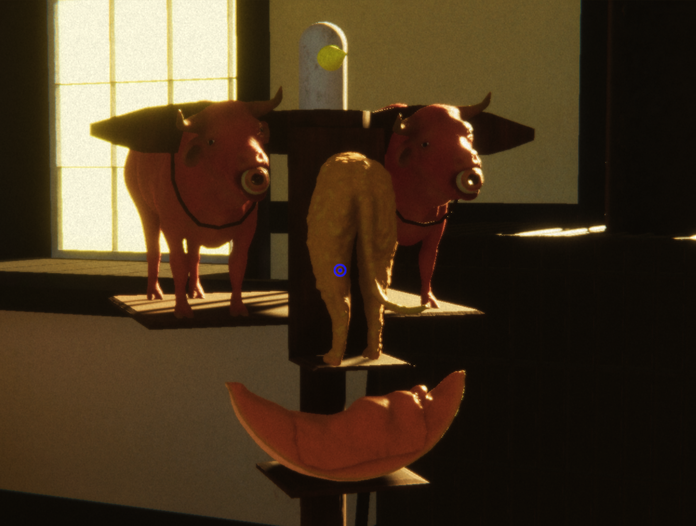
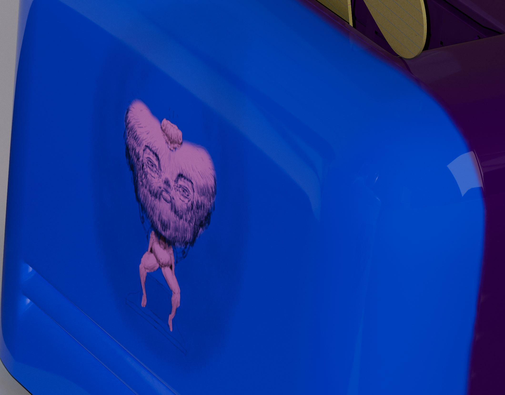

2019-2021
experimental video game
using: 3ds Max, Unity, Photoshop, Illustrator, Zbrush, Substance Painter
my easy shaker yoke face is an experimental video game about faces and making a face.
Players walk around a Shaker-style room and interact with surreal and mystical objects.
This game is available to download and play on a Windows computer. This game was made in Unity.
documentation below, download/more info here
demo with narration:
screenshots:

pistachio bridge
2019
a physical game about pistachios, drawings, and dying
documentation below, download instructions here
pistachio bridge is an interactive performance work/game about object transformation.
Carried out during an academic conference, guests could enter the gallery at any time and engage with the performance/game.
Full instructions/suggestions for the game/performance can be found on the itch.io page for the game.
video documentation:
three rocks for merton
2021
3D render
size variable
using: 3ds Max, Vray, Photoshop, Zbrush, Substance Painter
This work was made after reading New Seeds of Contemplation by Thomas Merton and is inspired by his thoughts in the book
as well as writings of feminist new materialism. Here I hope to question notions of the real and what it might mean for
imaginary objects to interact together under our gaze.
screenshot:
a pig visits my bedside
a diorama of the french revolution in their back,
walnuts in their ears,
a carrot candle illuminates
Made in 2020 in my Brooklyn apartment, shut in by myself during the COVID-19 pandemic,
my series of pig 3D renders explore the idea of the visitor, whether welcome or unwelcome.
In this image, the 3D model is composited into my bedroom, in an almost cruciform position.
Looking back, this work might represent the intrusive capitalist ‘pig’ I felt constantly around me,
alone in the pandemic, with my only connection to others being mediated by capitalist
media streams such as youtube and instagram - of this, I am unsure.
screen shot:
a pig in my kitchen pushes a famous shovel
(on it, a coffee candle from costa rica)
jessica walks away
A continuation of my previous pig image.
Created after my partner came to live with me during the 2020 COVID-19 lockdown,
this pig strikes a different tone. Plowing through my apartment with Duchamp’s shovel,
with the words of Laurie Anderson and drawings by my partner scribbled on its back,
I’m unsure what this pig comes to represent or mean. As a piece of COVID-19 art,
maybe it's the jumbled sense of meaning and domestic intrusion that makes it stand out for me.
screenshot:
two children spin on the blades of a blender
(we know no harm will come of this),
a rice cooker filled with aggression
(possibly so-called-male),
two cardboard cut-outs in a toaster
(of me and you?)
Made in 2020 - after my lease in Brooklyn ended and my partner no longer had their job,
I moved back into my parents’ house for a time. This 3D render of textually and visually
manipulated kitchen appliances presents to us a surreal domestic interior.
Gathered before us are imaginary objects on display,
modeled from real-life appliances I have in my kitchen but given a new purpose;
to be contemplated in their absurdity.
details:
This image shows the drawings that replace the functional text on the buttons of the blender.
These drawings were made using Substance 3D Painter.

models:
These sketchfab links show the 3D model of the rice cooker and blender from the larger render.
These models are free for the public to download. The models have so far been downloaded three times.
joined in hands they celebrated what they could
2017
interactive website
using: HTML, CSS
joined in hands they celebrated what they could is an interactive hypertext story.
The narrative follows a group of people gathering for some type of celebration
and looks at the various emotions those joined in hands feel.
The work also exists as a virtual architecture tour of one of my former apartments.
video documentation:
Lounging/Longing
2018
instructions for a performance/game
Lounging/Longing is a written set of suggestions for a performance/game for two people.
Expanding upon my earlier written instruction work that pulled from Fluxus writings,
this booklet, in decorated prose, lays out suggestions for two men, a painter and a lounger,
to engage with each other in acts of intimacy.
Although never realized, this work stands on its own as a piece of instructional art.
video documentation:
A Celebration of an Insight by a Particular Portable Audience Chair
2018
performance
This is the documentation for a performance event I held at my apartment in 2018.
Guests including friends, family, former peers, as well as some apprehensive coworkers,
arrived to a fully catered party to celebrate an insight by a portable audience chair.